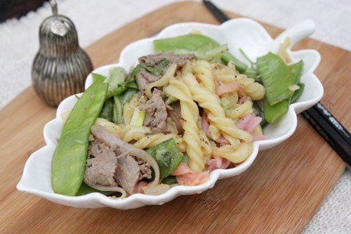

Nguyên liệu:
- 1/2 gói nui gạo, bạn có thể mua tại các quầy thực phẩm đồ khô hay siêu thị
- 300g thịt bò thái lát
- 200g Đậu Hà Lan
- Nửa củ hành tây, vài nhánh hành lá
- Hạt nêm, hạt tiêu, muối, dầu hào
Cách làm:
Bước 1:
- Đun nước sôi, cho nui gạo vào luộc đến khi nui nở chín, đổ nui ra rổ và xả lại nước lạnh để không bị dính chùm, để lên kệ cho ráo nước.
Bước 2:
- Thịt bò thái lát mỏng, cho vào bát một ít muối, hạt tiêu và dầu hào, trộn đều, ướp khoảng 15 phút.
Bước 3:
- Đậu Hà Lan rửa sạch, tước bỏ phần xơ, rửa sạch để lên rổ cho ráo nước.
- Hành tây bóc bỏ vỏ khô, thái vừa ăn.
Bước 4:
- Đun nóng dầu ăn, phi tỏi thơm thì cho thịt bò vào xào chín tái, đổ thịt bò ra đĩa để riêng.
- Dùng lại chảo đó cho đậu Hà Lan vào, xào khoảng 3 phút thì cho hành tây vào xào cùng, rưới một ít dầu hào lên bề mặt rau.
Bước 5:
- Cho nui vào đảo cùng, đảo nhẹ tay để không bị nát, nêm gia vị muối, hạt nêm. Xào đến khi nui và rau vừa miệng.
Bước 6:
- Cho bát thịt bò vào đảo cùng, nêm nếm lại gia vị, tắt bếp, thêm hành lá đã thái nhỏ vào. Múc ra đĩa dùng nóng, bạn có thể ăn kèm với tương ớt.